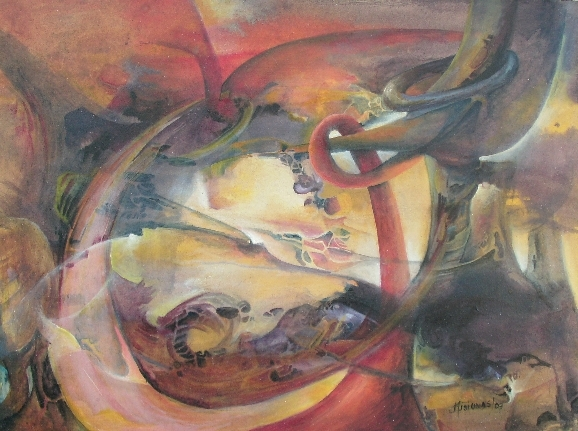
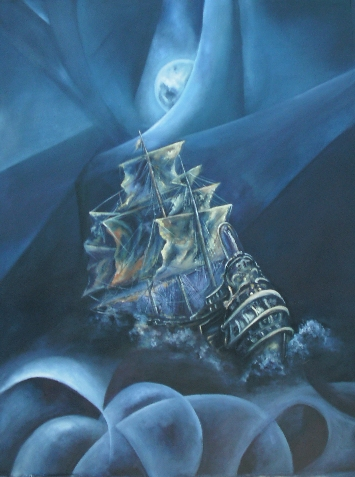
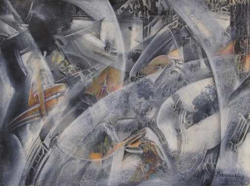
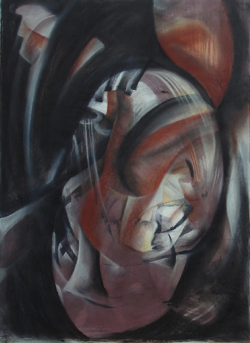
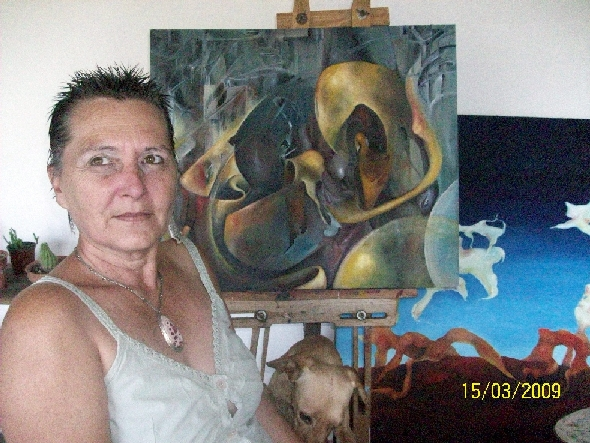

Tema Diciembre 09- Enero 010
Estamos con...
María Cristina Misiunas (artista plástica de Córdoba, Capital, Argentina)
 TITULO:"SUEÑOS" |
"Nací en la orilla del mar donde el horizonte es inalcanzable,
la profundidad aterradora y el cielo, marco de ese entorno,
|
En plena adolescencia fui desterrada
a una ciudad distinta. Mis deseos de seguir estudiando arte continuaban,
pero todavía eran sueños. En ese tiempo conocí a Pepe con quién
comparto mi vida. Cuando ya los hijos mayores estaban grandes, un día,
en la mesa familiar les dije “Voy a hacer algo que tengo pendiente:
estudiar arte.” |
 TITULO:"SOLO CON LA LUNA" |
 TITULO: "TRANSPARENCIAS" |
Hoy, viéndome florecida con seis nietos varones y una mujercita,
viajo con mi mente por espacios Casi, como dice Jung, entre el conciente y el inconciente no dejando
de lado la razón y ordenando Eso no quita que los objetos reales, los rostros y la figura humana
se encuentren en mi obra, Esta, mi forma de expresarme a través del arte, es ingresar
en mi yo. |
Sólo sentirlas. |
 TITULO:"MENTE" |
 |
Y veo una mirada que busca permanentemente… Graciela María Casartelli por "Vida
Reflexion" |
Ir al Currículum Vitae de la artista